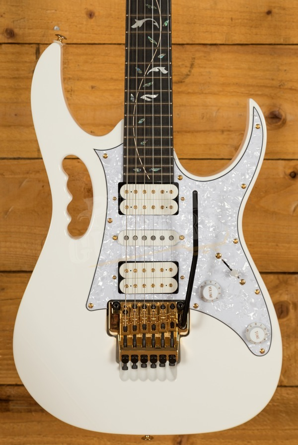

<div class="container guitar">
   <div class="row gx-5 align-items-center">
      <div class="col-lg-6 col-md-12">
         
      </div>
      <div class="col-lg-6 col-md-12 mt-5">
         <p class="para">
            This is my guitar, my beautiful Ibanez JEM7WH.
            My guitar has got my through some of the roughest patches in my life
         </p>
         <p class="para">
            I like to play a variety of styles, mostly very technical pieces from heavy metal to blues rock.
            My inspirations are Jason Becker, Ygnie Malmsteen, Steve Vai, Paul Gilbert, 
            Jimi Hendrix and Stevie Ray Vaughan
         </p>
         <p class="para">I don't play as much as I used too, which is probably a good thing since I played all the time.
            As a result, I'm not as fast and clean as I used to be. But from time to time, I still pick her up
            and forget the world around me. It's all about this note and the one that comes next, nothing else matters 
            in that moment
         </p>
      </div>
   </div>
</div>
